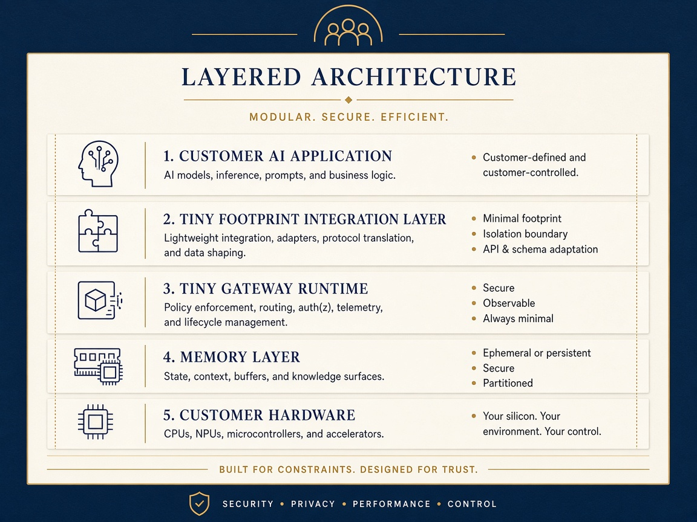

Pricing plans
One shared world. Many perspectives. New discoveries. Faster convergence. Better decisions.
Free
Architecture access · local labs$59/mo
Personal multi-agent intelligence · 8 concurrent$299/mo
Collective discovery & decisions · 32 concurrentFrom $30k/yr
Organizational intelligence infrastructureCustom
Provider-scale licensingProposed launch pricing. Community useful today. Full packaging → · fractisi.vercel.app
Why teams visit · full lab differentiators
Results vs flat skim, full-copy, gzip-only, and exact-text / prefix cache — what multi-agent teams come here to find.
100 / 100 vs 0 / 100
Expedition 002 · guided recovery finds chains, anomalies, solutions. Flat skim: zero.
−50% rounds · −85% ops
3 rounds vs 6; mean 6 ops vs 40 on the same constrained discovery path.
36.91× – 62.41×
Dup cut 89.6%–99.2%. Selective coarse-only ~99.5% fewer runtime bytes.
~42%+ residual
Shared pack vs naive copies — ~42% residual after gzip (smaller world); ~98% when world dominates. Compression shrinks copies; it does not remove the cross-copy tax.
4,758 vs 6,704 B
40 same-shape sessions: rhyme beats exact-text cache. Exact cache wins only identical text. Prefix reuse already helps exact prompts in production.
84.5% · 81.4% · ~9.6×
Aggregate cut 84.5% · GPU alloc proxy 81.4% · materialize ~9.6×. H100 rhyme-vs-prefix ~34% is simulation only.
Architectural / structured-state labs — not CapEx guarantees, not an LLM bake-off, not established “80% DRAM for AI serving.” Exp 002 · Tiny Gateway · Pricing.
The simplest way to understand FractiSI Multi-Agent
FractiSI Multi-Agent installs beside the stack you already run — Cursor, Claude Code, VS Code, Git, or a serving runtime. Tiny Footprint keeps the shared world once; coordination and composition turn parallel agents into one shippable result. Not a new computer, not a model swap, not a Cursor/Claude substitute.
Read the full simple breakdown — who buys, what they receive, where it installs, how it operates, without vs with Tiny Footprint, and one-engine / three-editions.
Two critical AI infrastructure challenges. One approach.
AI infrastructure is constrained by memory and time. Duplicated context, shared information reprinted per session, and intermediate representations burn accelerator memory and add preparation work—raising cost, contention, and latency.

Product family
We separate three things so you can buy the right seat:
Free → $49/mo
Community free. Developer Pro $59/mo · Team $299/mo · Enterprise from $30k/yr. Workstation, SDK, benchmarks on your machine.
Explore Local →$199–custom
Team/Studio and Enterprise Infrastructure for GPU fleets, adapters, monitoring, SLAs.
Explore Server →Strategic
Platform licensing, OEM, per-GPU-hour, joint validation with hyperscale partners.
Explore Cloud →Measured on a live local GPU
Headline results from FractiAI’s SynthOBS suite on this class of laptop GeForce (GDDR via DirectML / nvcuda)—matched with vs without the Tiny Footprint core. Production HBM and hosted frontier stacks still need partner validation.
Open the technical brochure · Whitepaper · Ship blog
Workstation · your IDE is the lab
First success criterion: a developer downloads the kit, opens it in VS Code, runs tiny doctor → install → demo → benchmark → report, and gets a reproducible comparison without FractiAI operating the box.
Validation initiative
AI infrastructure orgs, cloud operators, accelerator teams: join a joint program to validate FractiSI Multi-Agent (Tiny Footprint core) on real HBM-class serving—memory and latency as co-equal objectives.
Sign up for the test initiativeHonesty: Memory and latency numbers above are from FractiAI local-GPU labs (allocation proxy + real tiny-gpt2 DirectML microbench). The real-LLM lab measured latency; memory cuts are from the allocation proxy, and its baseline re-prefilled the full prompt. They are not a CapEx guarantee, not datacenter HBM silicon identity, and not a hosted frontier-vendor bake-off. Proposed prices are subject to final release terms. Contact: valetpru@gmail.com · valetpru@gmail.com.